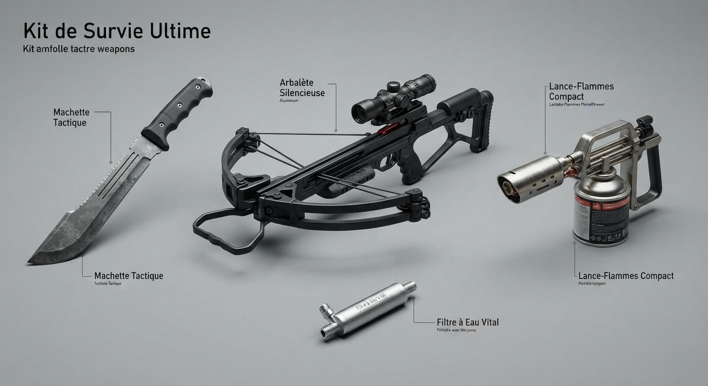

Comparatif technique des équipements du kit

| Equipement | Poids | Autonomie | Niveau de menace géré |
|---|---|---|---|
| Machette tactique renforcée | 1.2 kg | Illimitée (100% mécanique) | Rapproché / Corps à corps |
| Arbalète silencieuse à lunette | 2.5 kg | Munitions récupérables | Longue distance |
| Lance-flammes portable compact | 8.0 kg | 4 minutes d'utilisation continue | Élevé / Foules denses |
| Kit de filtration d'eau portable | 0.4 kg | 1000 litres filtrés | Vital / Survie biologique |